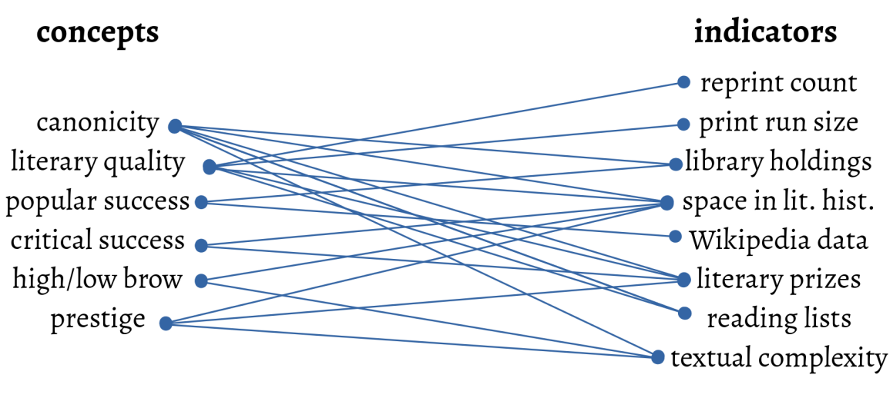

<!doctype html>
<html lang="en">
<head>
<meta charset="utf-8">
<!-- CUSTOMIZE THIS! -->
<title>ML für CLS (DHd2020)</title>
<meta name="author" content="Christof Schöch">
<!-- END -->
<meta name="description" content="Slides">
<meta name="apple-mobile-web-app-capable" content="yes">
<meta name="apple-mobile-web-app-status-bar-style" content="black-translucent">
<meta name="viewport" content="width=device-width, initial-scale=1.0, maximum-scale=1.0, user-scalable=no, minimal-ui">
<link rel="stylesheet" href="css/reveal.css">
<link rel="stylesheet" href="css/theme/simple.css" id="theme">
<!-- Code syntax highlighting -->
<link rel="stylesheet" href="lib/css/zenburn.css">
<!-- Printing and PDF exports -->
<script>
var link = document.createElement( 'link' );
link.rel = 'stylesheet';
link.type = 'text/css';
link.href = window.location.search.match( /print-pdf/gi ) ? 'css/print/pdf.css' : 'css/print/paper.css';
document.getElementsByTagName( 'head' )[0].appendChild( link );
</script>
<!--[if lt IE 9]>
<script src="lib/js/html5shiv.js"></script>
<!--[endif]-->
</head>

<body>
<div class="reveal">
<div class="slides">
<section data-markdown="" data-separator="^\n-\n" data-separator-vertical="^\n--\n" data-charset="utf-8" data-background-image="img/basics/uni-trier-icon.png" data-background-size="50px" data-background-position="top 10px right 10px">
<script type="text/template">

<!-- THIS IS WHERE THE CONTENT GOES! -->
<!-- Any section element inside of this container is displayed as a slide -->

##Machine Learning für die Computational Literary Studies
<br/>
<hr/>
<br/>
Christof Schöch (Trier)
<br/>
<br/>***Panel: Maschinelles Lernen in den digitalen Geisteswissenschaften***
<br/>**5. März 2020, DHd2020, Paderborn**
<br/>Folien: https://christofs.github.io/ml-dhd2020/#/
<br/>
<hr/>
</img>&nbsp;&nbsp;&nbsp;</img>


-
## Thema
* Sinnvoller Einsatz von ML in den GW <!-- .element: class="fragment" data-fragment-index="1" -->
  * nicht als Mittel zum Zweck
  * sondern als Erkenntnisinstrument
* Aspekte <!-- .element: class="fragment" data-fragment-index="2" -->
  * Ist das überhaupt möglich? Positionen
  * Herausforderung 'Operationalisierung'
  * Grade der Klassenzugehörigkeit modellieren

-
# Neuere Positionierungen zu ML/AI

--
### Kathy O'Neill<br/>*Weapons of Math Destruction* (2016)

* ML / KI haben gefährliche Fehler, unerwünschte Effekte, unsichtbare (insbesondere rassistische) Biases

--
### Katharina Zweig<br/>*Ein Algorithmus hat kein Taktgefühl* (2019)

* Bestimmte Algorithmen erfordern Prüfung: Entscheidungen über menschliche Schicksale
* Viele andere können nützliche Aufgaben für uns übernehmen

--
### Sebastian Ruder<br/>"NLP's ImageNet moment has arrived" (2018)

* Der Wechsel von Wort-Vektoren zu vortrainierten Sprachmodellen ist ein 'game changer' für NLP

--
### Nan Z. Da<br/>"The Computational Case Against CLS" (2019)

* Quantitative Verfahren sind grundsätzlich nicht geeignet, relevante Aussagen über literarische Texte zu generieren.

--
## Katharina Zweig
### Naturwissenschaften vs. Geisteswissenschaften?
<br/>
<br/>
>"Als Biochemiker ist man sehr detailverliebt und kontextsensitiv. Biochemikerinnen und Biochemikern ist es immer klar, dass beispielsweise nicht alle genetischen Informationen einer Zelle auch zu jedem Zeitpunkt in Form von Proteinen vorliegen. Daher betrachten wir immer das Gesamtsystem." (S. 64)


-
# Herausforderung 1:<br/>'Operationalisierung'

--
## European Literary Text Collection (ELTeC)

* COST Action *Distant Reading for European Literary History*
* Ziel: vergleichbare Sammlungen von je 100 Romanen in 10-15 Sprachen
* Korpus-Design: 1840-1919; author gender, text length, time period, canonicity
* Sagten Sie 'Kanonisierungsgrad'? <!-- .element: class="fragment" data-fragment-index="1" -->

--
## Vertikale Stratifikation von Literatur
<a href="img/vertical-stratification.png"></a>


-
# Herausforderung 2:<br/>Unscharfe Klassen

--
## So and Roland 2020
* Richard Jean So and Edwin Roland, "Race and Distant Reading", PMLA (2020)
* Methode: traditionelles Machine Learning (kein Deep Learning)
* Korpus:
    * 2x220 englische Romane 1950-2000
    * Autor*innen, die als "black" oder "white" identifiziert wurden

--
## Quantifizierung?
>But for the most part, scholars [...] have shied away from using large-­scale quantitative methods to explore questions of identity, particularly questions of racial identity and minority discourse. The reasons for this are not difficult to fathom. Distant reading requires quantification. Reading race distantly thus requires the quantification of racial identity or racialized language. [...] By contrast, cultural and historical approaches to race emphasize its social constructedness. Race is a category that escapes measurement or simply renders it untenable. (S. 2)

--
## Vorgehensweise
* Lexikalische und narrative Merkmale
* Klassifikationsaufgabe (logistic regression)
* Aber: nicht binäre Klassenzuordnung
* Sondern: Wahrscheinlichkeit für jeden Text

--
## A predictive model of authorial race
<a href="img/so-2020.png"></a>


-
# Danke!

-
# Bonus

--
## Herausforderung 2:
>If we gave you a short passage from a novel and only told you that the text was written by an American author and published between 1950 and 2000, could you guess that author’s racial identity? In just asking this question, we see how preposterous and likely offensive this exercise is. Any attempt to associate diction and syntax, or style and narrative, with race will likely end up reproducing stereotypes. Black writers only write about X or Y, while white writers write about A or B. These are claims rooted in reductive and racist assumptions about identity.

--
## Problem 2: Korpus und Bias
* 220 Romane von "black authors" (random sample aus 1200 insgesamt identifizierten Romanen); author gender;
* 220 Romane von "white authors" (random sample (stratified by genre) aus 20.000 "most held" Romanen): vier "genres"


--
## Ausgangspunkt
>It’s likely easier to accept measuring a novel’s popularity by sales figures or classifying its genre by diction than labeling it according to discrete racial identifiers. Such labeling is an affront to critical race studies, which has taken as its very mission the deconstruction of racial categories. (S. 2)

--
## Brian Cantwell Smith
### *The Promise of Artificial Intelligence*, 2019

* Die drei Wellen der KI haben keine menschliche Intelligenz erreicht
* menschliche Intelligenz ist kategorial anders als KI

--
## Ted Underwood

<br/><small>Source: @Ted_Underwood, Twitter, 31. Januar 2020, https://twitter.com/Ted_Underwood/status/1222270714268528640</small>


-
# Dankeschön!
<br/>
<br/>
<br/>
<br/>
<br/>
<br/>
<hr/>
<p>Christof Schöch, 2020</p>
<p><a href="https://dh.uni-trier.de/">dh.uni-trier.de</a></p>
<p><a href="https://creativecommons.org/licenses/by/4.0/">CC-BY 4.0</a><br/></p>
<hr/>
<br/>
<br/>
</script>
</section>


<!-- DON'T TOUCH UNLESS YOU KNOW WHAT YOU'RE DOING :-) -->
</div>
<script src="lib/js/head.min.js"></script>
<script src="js/reveal.js"></script>
<script>
// Full list of configuration options available at:
// https://github.com/hakimel/reveal.js#configuration
Reveal.initialize({
    controls: true,
    progress: true,
    history: true,
    center: true,
    transition: 'slide', // none/fade/slide/convex/concave/zoom
    // Optional reveal.js plugins
    dependencies: [
        { src: 'lib/js/classList.js', condition: function() { return !document.body.classList; } },
        { src: 'plugin/markdown/marked.js', condition: function() { return !!document.querySelector( '[data-markdown]' ); } },
        { src: 'plugin/markdown/markdown.js', condition: function() { return !!document.querySelector( '[data-markdown]' ); } },
        { src: 'plugin/highlight/highlight.js', async: true, callback: function() { hljs.initHighlightingOnLoad(); } },
        { src: 'plugin/zoom-js/zoom.js', async: true },
        { src: 'plugin/notes/notes.js', async: true }
        ]
    });
</script>
</body>
</html>
